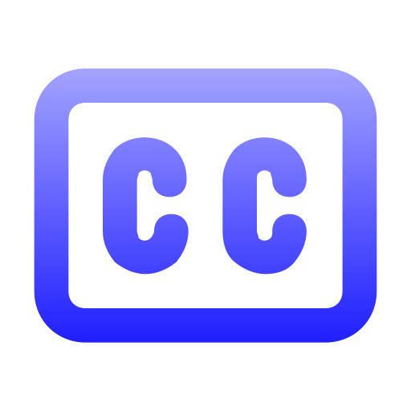
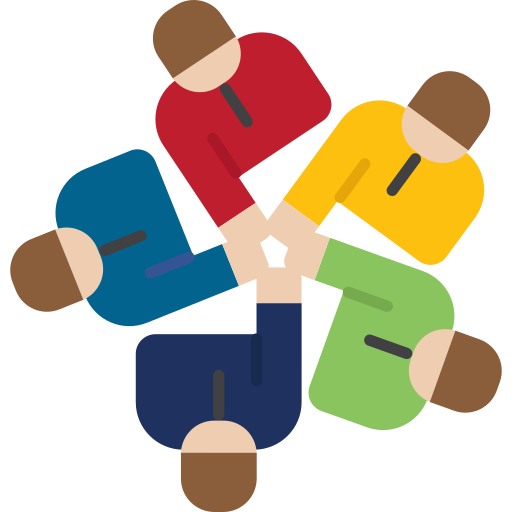
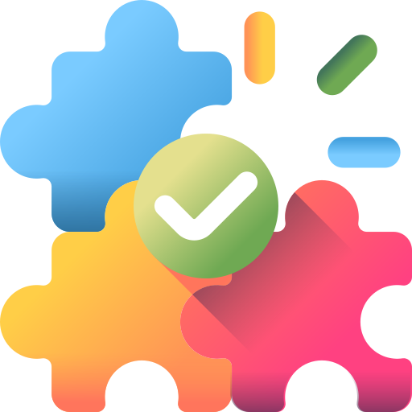
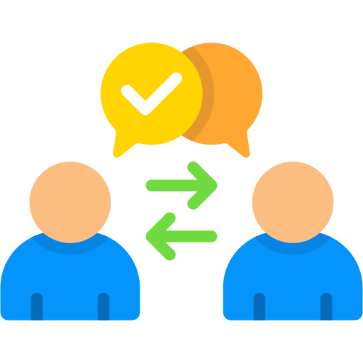
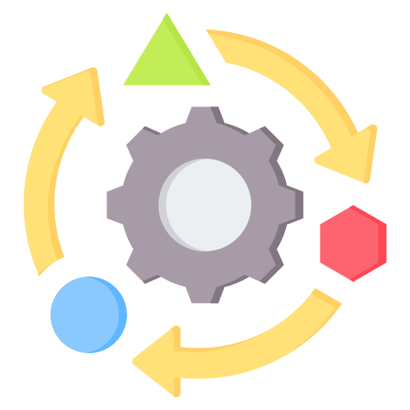
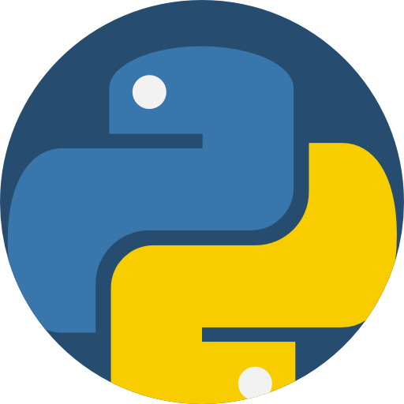
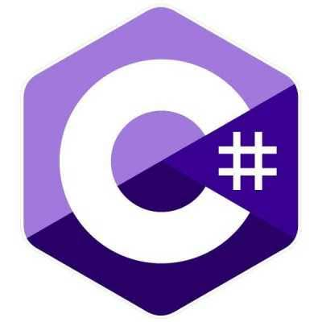
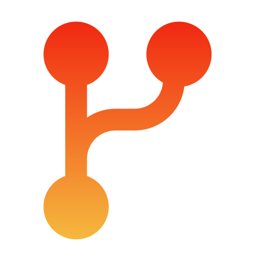
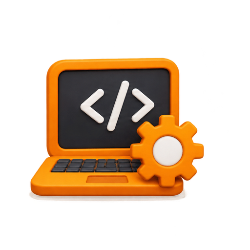
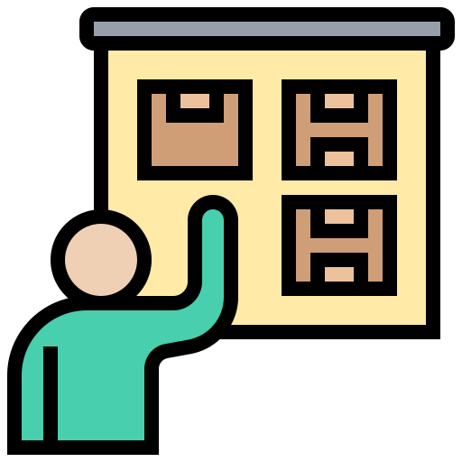

Portafolio personal
Proyecto web orientado a la creación de una landing page personal para presentar información profesional, habilidades, proyectos y medios de contacto de forma clara y organizada..
HTML y CSS
Ver portafolioActualmente me encuentro en formación en desarrollo de software, adquiriendo conocimientos en programación, diseño de interfaces y manejo de herramientas tecnológicas. A lo largo de este proceso he trabajado con Python, HTML, CSS y Git, aplicando lo aprendido en proyectos académicos que me han permitido comprender mejor cómo se desarrolla una aplicación, desde su estructura hasta su funcionamiento.
De manera complementaria, también me estoy formando en el desarrollo de videojuegos con Unity, explorando la programación y el diseño de experiencias interactivas. Considero que cada proyecto es una oportunidad para ampliar mis conocimientos, mejorar mis habilidades y adquirir experiencia práctica en las distintas áreas del desarrollo tecnológico.
Proyecto web orientado a la creación de una landing page personal para presentar información profesional, habilidades, proyectos y medios de contacto de forma clara y organizada..
HTML y CSS
Ver portafolio
Aplicación académica desarrollada para gestionar información relacionada con clientes, instructores, vehículos y citas, permitiendo una organización más clara de los procesos.
PYTHON y JSON
Ver codigo
Prototipo de videojuego pixel art de c# tipo endless runner en el que un pájaro recorre cables eléctricos, esquivando chispas, descargas y otros obstáculos para sobrevivir el mayor tiempo posible.
VIDEOJUEGO C#
Ver másCapacidades que he desarrollado durante mi formación y que me ayudan a trabajar, aprender y resolver problemas.
Creatividad

Propongo ideas y busco distintas formas de llevarlas a la práctica.
Trabajo en equipo

Comparto ideas, escucho a mis compañeros y participo en las tareas del grupo.
Resolución de problemas

Analizo las dificultades y busco soluciones que pueda aplicar.
Comunicación efectiva

Expreso mis ideas con claridad y tengo en cuenta las opiniones de los demás.
Adaptabilidad

Me adapto a nuevas herramientas y formas de trabajo durante mi formación.
Tecnologías y metodologías que he utilizado en proyectos académicos y ejercicios prácticos.

PythonManejo de funciones, validaciones y archivos JSON.
Estructuración de páginas y contenido web.
Diseño, distribución y animaciones de páginas web.

C#Orientado a los videojuegos en Unity, en especial a los movimientos de los personajes.

GitControl de cambios, commits y ramas.
Publicación y organización de repositorios.
Planificación de tareas y trabajo en equipo.
Creación de prototipos y mecánicas de videojuegos.
Modelado y edición básica de objetos 3D.
|
 Desarrollo de proyectos academicos |
Aplicación de conocimientosDurante mi formación he realizado ejercicios y proyectos en los que he participado desde la organización inicial hasta las pruebas de funcionamiento. Estas actividades me han permitido trabajar con diferentes módulos, identificar errores y realizar ajustes para conseguir que cada parte funcione correctamente. |

Organizacion y seguimiento del trabajo |
Organización del proceso de desarrolloEn las actividades de clase he practicado la organización de tareas, el seguimiento de avances y la revisión de los cambios realizados. Esto me ha ayudado a trabajar de manera más ordenada y a reconocer la importancia de mantener un registro del proceso, especialmente cuando un proyecto necesita correcciones. |
|
 Participación en actividades grupales |
Experiencia de trabajo colaborativoHe participado en trabajos y simulaciones académicas donde ha sido necesario distribuir responsabilidades, estimar tiempos y comunicar avances. Estas experiencias me han permitido conocer mejor la dinámica del trabajo en equipo y la importancia de cumplir con las tareas acordadas. |
¿Tienes alguna propuesta o quieres conocer más sobre mis proyectos? Puedes comunicarte conmigo por estos medios.
¿Tienes alguna consulta o propuesta? Escríbeme aquí.